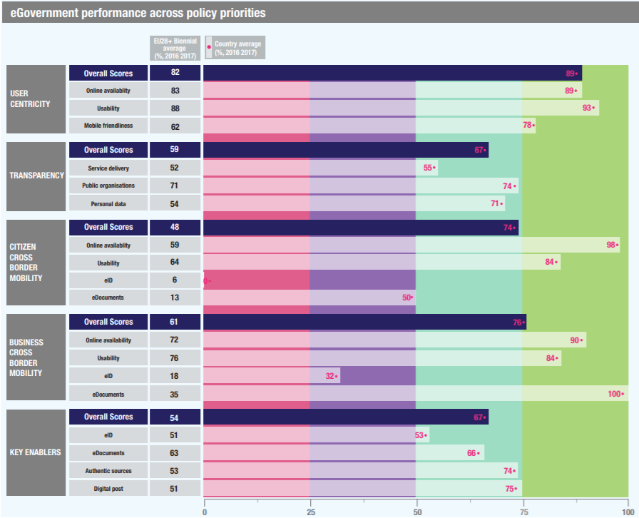

ISA2
ISA2
Digital Government Factsheet 2019
Sweden
Digital Government Highlights 6
Digital Government Political Communications 7
Digital Government Legislation 11
Digital Government Governance 15
Digital Government Infrastructure 19
Digital Government Services for Citizens 24
Digital Government Services for Businesses 33
Population: 10 120 242 inhabitants (2018)
GDP at market prices: 467.011 million Euros (2018)
GDP per inhabitant in PPS (Purchasing Power Standard EU 28=100): 121 (2018)
GDP growth rate: 2.3% (2018)
Inflation rate: 2% (2018)
Unemployment rate: 6.3% (2018)
General government gross debt (Percentage of GDP): 40.8% (2018)
General government deficit/surplus (Percentage of GDP): 1.6% (2018)
Area: 438 576 km2
Capital city: Stockholm
Official EU language: Swedish
Currency: Swedish krona SEK
Source: Eurostat (last update: 15 March 2019)
The following graphs present data for the latest eGovernment Indicators for Sweden compared to the EU average. Statistical indicators in this section reflect those of Eurostat at the time the Edition is being prepared.
Percentage of individuals using the internet for interacting with public authorities in Sweden | Percentage of individuals using the internet for obtaining information from public authorities in Sweden |
| |
Percentage of individuals using the internet for downloading official forms from public authorities in Sweden | Percentage of individuals using the internet for sending filled forms to public authorities in Sweden |
| |
The graph below is the result of the latest eGovernment Benchmark report, which monitors the development of eGovernment in Europe, based on specific indicators. These indicators are clustered within four main top-level benchmarks:
These top-level benchmarks are measured using a life-events (e.g. mystery shopping) approach. Eight life events are included in the overall eGovernment performance score. Four of these life events were measured in 2013, 2015 and 2017 and the other four were measured in 2012, 2014, 2016, and again in 2018. The life events measured in 2017 were Regular business operations, Moving, Owning and driving a car and Starting a small claims procedure. The life events measured in 2018 are Business start-up, Losing and finding a job, Family life and Studying.

Source: eGovernment Benchmark Report 2018 Country Factsheet
Digital Government Political Communications
Digital Government Legislation
Digital Government Governance
Following the government reshuffle in January 2019, the Ministry of Infrastructure was established and the responsibility for digitalisation is now coordinated within the Ministry with support from the unit of Digital Government.
Digital Government Infrastructure
Two government assignments were issued in May 2018 focusing on establishing the foundation for a more standardised and interoperable national approach to base registries and information exchange. Several key stakeholders are involved in the assignments, including some of the larger government agencies and the new Agency for Digital Government (DIGG) has the responsibility to coordinate work. The assignments will be reported to the government in 2019.
Digital Government Services for Citizens and Businesses
The verksamt.se portal provides a comprehensive single-point for entrepreneurs and enterprises to access relevant and official eServices and information from three public authorities: the Swedish Companies Registration Office (Bolagsverket); the Swedish Tax Agency (Skatteverket); and the Swedish Agency for Economic and Regional Growth (Tillväxtverket).
A Sustainable Digitalised Sweden – A Digitalisation Strategy
In May 2017 the Swedish government presented the strategy A Sustainable Digitalised Sweden - A Digitalisation Strategy. The strategy explained how the digitalisation policy contributed to competitiveness, full employment and economically, socially and environmentally sustainable development in the society. The strategy set the focus on the government's digitalisation policy.
To achieve the overall objective of Sweden of becoming a world leader in harnessing the opportunities of digital transformation, the strategy contained five goals:
Programme for the digital revival of the public sector: Digital First (2016 – 2018)
The goal of the programme is to make Sweden the best in the world in the use of digitalisation opportunities. The work of the programme is driven by several agencies that are involved in monitoring and facilitating progress in different sectors of the economy.
The Swedish government sees digitalisation as the largest individual change factor that affects all parts of society. The objective of the ICT policy is clear – Sweden shall become the best in the world in using digitalisation opportunities. The main sub-targets of the government are:
The programme also implies that provision of digital services should be the first choice in the State’s relations with citizens and businesses, where relevant and possible. Digital First operates in three key priority areas:
In September 2018 a new agency, DIGG, was established to serve as a hub for digitalisation of the public sector. The aim is to improve the coordination of public sector digitisation and support it at both central, regional and local level. One important task is to coordinate, develop, manage and provide a national digital infrastructure for the public sector and to support expertise within the area. Tasks from several other central government agencies have been transferred to DIGG.
Putting the citizen at the centre (2012 – present)
The Swedish Government Strategy for Collaborative Digital Services in Government Administration, Putting the Citizen at the Centre, was launched in December 2012. This strategy described how the Swedish Government planned to further strengthen the ability of government agencies to work together in delivering digital services. More common digital services in the daily lives of both citizens and businesses were further simplified. These digital services must be developed in a user-centric way: simple and secure to use, and easily accessible to everyone. Innovation was enhanced by making it easier to find and use re-usable public information and digital services with interfaces that can be used by other systems. The publication of public sector information on the Internet and the use of social media promoted both transparency and citizen involvement. Quality and efficiency in government administration was increased through standardised information management, better information security and digitised processes. Such internal efficiency and service in developing digital services must always be conditional to the protection of personal privacy and the need for confidentiality. The above objectives formed the basis of the Swedish Government’s coordination and prioritising of the development of inter-agency cross-sectorial projects.
Strategic assignment on open data and artificial intelligence
The Swedish government embarked on an assignment to further the goals of data and artificial intelligence. To improve access to public information, in the form of open government data, the government appointed DIGG the strategic assignment of developing the public sectors ability to make open data available and to work with data-driven innovation. Amongst other things, DIGG shall prioritise the availability of mature and highly requested datasets within specific sectors, draft a national action plan for the management of open data and provide methodological support and guidelines.
Nordic Mobility Action Programme 2019–2021
Freedom of movement is one of the cornerstones of Nordic co-operation, and the political ambitions are high: it will soon be even easier to relocate to another Nordic country to work, study, run a business or just to live there.
These political ambitions were outlined in the Nordic/Baltic ministerial declaration on Digital North, adopted in April 2017. As a follow-up, the Nordic Mobility Action Programme 2019–21 was adopted at a meeting of the Ministers for Nordic Co-operation in Reykjavik on 7 February 2019, the first meeting under the Icelandic Presidency of the Nordic Council of Ministers. The mobility programme consists of higher funding for a range of projects and programmes that support mobility for individuals and a list of measures that promote freedom of movement and Nordic integration for companies and individuals.
Cross-border electronic identification is one of the key enablers in this programme. The Nordic-Baltic eID Project (NOBID) runs from 2018-2020 with the aim to speed up the implementation of eIDAS in the Nordics and Baltics. In addition, the Nordic-Baltic cooperation on eID was on the agenda at the Nordic Prime Ministers meeting on 31 October 2018. The Prime Ministers supported the eID cooperation securing access to trusted digital services across borders. Further action will be taken at the prime ministerial level in 2019.
National Cyber Security Strategy
The government presented Sweden’s first National Cyber Security Strategy in June 2017. The strategy was then supplemented with an appendix in July 2018, which, among other things, included an overview of ongoing and completed measures initiated by the government 2017-2018. Between 2017 and 2018, there were approximately 50 ongoing or completed measures initiated by the government to implement the strategy.
At the beginning of March 2019, seven government agencies with responsibilities in the field of cyber security also presented a joint action plan to implement the strategy at the agency level. The joint action plan contains 77 of the most important measures that is scheduled to begin implementation in 2019.
References to the Once-Only Principle
Although in Sweden there is no legal obligation for The Once-Only Principle (TOOP), the Swedish national budget proposal for 2017 provided clear references to it and foresaw cases where it should be used. TOOP is also part of the Swedish Framework for Digital Collaboration (Swedish version of the European Interoperability Framework) developed by several government agencies in a collaboration program called eSam. Additionally, a Swedish Government Committee has been charge of developing further proposals and recommendations for the application of TOOP in Sweden in what regards the companies’ interactions with the public sector. It mainly proposes how TOOP coordination can be organised, and how a good and consistent description of the data requirement can be maintained.
New guide from the National Agency for Public Procurement
The National Agency for Public Procurement launched a new guidance on the eProcurement process, in order to better facilitate its use.
A proposal on better public procurement statistics
The government adopted a proposal on a bill about developing better public procurement statistics. The proposal is an important step in order to provide secure information on how tax money is used and in order to be able to follow how the national procurement strategy is applied.
Vision for eHealth 2025
Digitisation offers great opportunities for future social services and health and medical care. Modern information and communication technologies can make it easier for individuals to be involved in their own health and social care, support contact between individuals and service providers, and provide more efficient support systems for staff at service providers.
The Government and the Swedish Association of Local Authorities and Regions want to support efforts to make use of the opportunities of digitisation in social services and health care and have decided to endorse a common vision for eHealth up to 2025.
eHealth Action Plan 2017-2019
In October 2017, the Swedish government and Swedish Association of Local Authorities and Regions (SKL) agreed on an eHealth action plan for the period 2017-2019. The action plan includes a new national cooperation and coordination structure.
The action plan is a concrete result of the 2025 eHealth Care Vision, developed by SKL and the Swedish government.
Digital management of courts decisions, penalty and fines
Digitisation can contribute to a judicial system which is well-functioning, efficient, based on rule of law and trusted by the people. Authorities in the judicial system should speed up in exchanging information digitally and at the same time strengthen their digital government capability. In light of this, judicial authorities have been commissioned to jointly develop methods for managing criminal cases, focusing on efficiency, and to examine how crime victims should be able to get a better digital response.
National standardisation strategy
Two government assignments were issued in May 2018 focusing on establishing the foundation for a more standardised and interoperable national approach to base registries and information exchange. Several key stakeholders are involved in the assignments, including some of the larger government agencies and DIGG, which has the responsibility to coordinate the work. The assignments will be reported to the government in 2019.
The national standardisation strategy was adopted in July 2018, including some strategic goals and means for standardisation of the digital government.
European Blockchain Partnership
Regarding blockchain, Sweden has committed to the European Blockchain Partnership by sending experts to all the groups.
National approach to artificial intelligence
The Swedish government adopted the National Approach to Artificial Intelligence in June 2018. The approach contained key conditions for the use of Artificial Intelligence (AI) in Sweden, in order to achieve the Governments goal to make Sweden a leader in harnessing the opportunities that the use of AI can offer.
Assignment on open data and artificial intelligence
The Swedish government is carrying out a strategic assignment on open data and artificial intelligence. DIGG has been tasked with developing the public sector’s ability to use AI, with a special focus on information security and personal integrity. Among other things, the assignment includes mapping the different initiatives on AI within the public sector, analysing which abilities are missing or required for the public sector to efficiently work with AI, and to suggest possible solutions and highlight legal obstacles.
Administrative Procedure Act
In September 2017 the Swedish Parliament voted for a new Administrative Procedure Act (Förvaltningslag). The new law is significantly more technology independent than its previous equivalent and welcomes digital communication.
Law on accessibility to digital public service
The law on accessibility to digital public service was issued on 22 November 2018 and entered into force 1 January 2019. The law implemented directive 2016/2102/EU but also contained requirements that go beyond the provisions of the directive. DIGG has the right to create legislation for the electronic format of the transfer of eInvoices.
Freedom of the Press Act
In 1766, Sweden became the first country in the world to introduce legislation on Freedom of Information with the Freedom of the Press Act. This Act was reviewed in 1949 and was last amended on 1 January 2011. Chapter 2 on the Public Nature of Official Documents decrees that “every Swedish subject shall have free access to official documents”. Public authorities must respond immediately to requests for official documents. Requests can be in any form and anonymous. Each agency is required to keep a register of all official documents and most indices should be publicly available. There is currently an effort to make the registers available electronically. Decisions by public authorities to deny access to official documents may be appealed internally. Complaints can also be lodged to the Parliamentary Ombudsman, who can investigate and issue non-binding decisions.
Law on the Re-use of Public Administration Documents
On 1 July 2010, Sweden adopted new legislation transposing Directive 2003/98/EC on the re-use of public sector information in the form of Law No. 2010:566 of 3 June 2010. This new law specifically purported to promote the development of an information market by facilitating re-use by individuals of documents supplied by the authorities on conditions that cannot be used to restrict competition.
Public Access to Information and Secrecy Act
The Public Access to Information and Secrecy Act (2009:400) contained provisions on confidentiality and non-disclosure of public documents. Information could now be given protection in various areas, among different agencies, or in various cases.
eIDAS Regulation
Sweden is complying with the eIDAS Regulation (910/2014) and is preparing to notify a Swedish electronic identification scheme in accordance with the regulation. Pre- notification is planned to start 2020.
Law on Electoral Systems for Electronic Identification Services
This law contained provisions on the application of Electoral Systems for Electronic Identification Services.
Act on Qualified Electronic Signature
This Act, which implemented the EU Directive on a Community framework for electronic signatures (1999/93/EC), entered into force on 1 January 2001. Under this legislation, the Swedish electronic signature included authentication and integrity requirements. According to the Act’s definition of qualified electronic signatures, there were only certain certification authorities (CAs) that might provide such signatures. The Act stated that when a law or regulation contained requirements for a hand-written signature, and if such signature was satisfied by electronic means, a qualified signature could fulfil this requirement.
A new Protective Security Act entered into force on 1 April 2019. The Protective Security Act protected activities of importance for Sweden’s national. The Act also encompassed activities covered by an international protective security commitment binding on Sweden. The Act emphasised that security-sensitive activities could be performed by both government agencies and private operators. The new Act not only regulated security regarding the handling of classified information, but emphasised the need for protection of other security-sensitive activities such as essential information systems.
Transposition of NIS Directive
The NIS Directive (2016/1148) was transposed into Swedish law on 1 August 2018. Operators of essential services and digital services became subject to information security requirements in accordance with the NIS Directive.
New Data Protection Act
After the European Commission decided on a new regulation for data protection – the General Data Protection Regulation (GDPR) - in February 2016 the Swedish government appointed a team to evaluate how Swedish laws and regulations should be adapted to GDPR, which came into effect on 25 May 2018.
On 12 May 2017, the Swedish Data Protection Commission (Betänkande av Dataskyddsutredningen) published the evaluation on the Swedish Parliament’s (Riksdag’s) website.
In March 2018 the Swedish Parliament approved a proposal from the Government on the necessary adjustments in national legislation to implement the GDPR.
Personal Data Act
The Personal Data Act came into force on 24 October 1998. The Personal Data Act was adopted to bring Swedish law into compliance with the requirements of EU Data Protection Directive 95/46/EC, which aimed to prevent the violation of personal integrity in the processing of personal data. The Act listed certain fundamental requirements concerning the processing of personal data. These demands included, inter alia, that personal data may only be processed for specific, explicitly stated and justified purposes, and if the person registered gives his/her consent. Exemptions to this rule included the exercise of official powers, or the fulfilment of a legal obligation by the controller of personal data. In many areas of the administration special registry laws exist to supplement or replace the provision in the Personal Data Act. The Act was subsequently amended to comply with the GDPR.
Population Registration Act
The Population Registration Act describes when and where a person has to be registered, when a change of address has to be reported and how a population registration decision may be appealed. The Act is supplemented by a population registration ordinance, which includes rules prescribing that certain other authorities should furnish the population registry with information concerning addresses. It regulates the population registry together with the Civil Registration Act.
Civil Registration Act
The Civil Registration Act describes which registries must be kept, the purpose of the registries, what they may contain and how users can search for information within their systems. The Act is supplemented by an ordinance on population registries, stating, among other things, when information should be transferred between the different registries. It regulates the population registry together with the Population Registration Act.
Road Traffic Registration Act
The Vehicle Registry was established via the Road Traffic Registration Act (2001:558), together with the Road Traffic Registration Ordinance (2001:650). It contains details on items such as vehicle registration, registration fees, data on driver's license registration and the right to request information.
Cadastre Act
The Land Registry was established by the Cadastre Act (2000: 224). The Act states that the Land Registry publish the information contained in the registry and make it available to everyone. The Act includes the purpose of the registry, the content of the registry, the agency, which enters the information into the registry, the privacy management, the disclosure of recording for automatic processing, the fees, etc.
Tax Registration Act
The Tax registration Act (1980:343) defines the content and functions of the Tax Registry under the agency of the Ministry of Finance. It also states details regarding the access to the data in the central tax registry.
Act on Public Procurement (LOU)
Public procurement is governed by the Swedish Public Procurement Act (2016:1145-LOU), which itself is largely based on the two EU Directives on public procurement (2004/17/EC and 2004/18/EC).
eInvoicing Legislation
In Sweden, the responsible entity in the field of eInvoicing is the Ministry of Infrastructure. According to the legislation (Ordinance for accounting - Förordning om myndigheters bokföring, 2000; Ordinance for electronic information exchange - Förordning om statliga myndigheters elektroniska informationsutbyte, 2003;) eInvoicing has been mandatory in Sweden since 2008 for central government agencies.
As of 1 April 2019, all purchases in the public sector must be invoiced electronically (Law on electronic invoices as a result of public procurement - Lag om elektroniska fakturor till följd av offentlig upphandling, 2018). This means that all providers to the public sector must send eInvoices and that authorities, municipalities, county councils and regions must be able to receive eInvoices. This applies to all public procurements above and below the thresholds.
eJustice Legislation
In May 2018, the following four amendments in the field of eJustice were issued as a result of the legislative bill Digital handling of court rulings, criminal charges and order penalty:
These amendments allow for electronic signatures when signing court decisions and when applying for summary proceedings for an order to pay or summary proceedings for assistance. Furthermore, they allow for electronic signatures when approving orders for summary penalty and orders for a breach-of-regulations which, among other things, enables a more digital management of fines for speeding violations.
Legislation on the National Medication List
The Swedish Parliament approved a proposal from the government for new legislation on the National Medication List in June 2018. The National Medication List creates a single source for data on a patient's prescribed medicines and other products while safeguarding the patient's right to privacy.
Act on Electronic Commerce and other Information Society Services
Adopted in 2002, this act transposed the EU Directive 2000/31/EC on certain legal aspects of information society services, in particular electronic commerce (Directive on electronic commerce). It stipulated the obligations of service providers and regulates the treatment of information submitted online.
Set up of technical standards for the health care system
In order to improve interoperability within the health care system the Swedish eHealth Agency was commissioned in March 2019 to set up a national organisation for administrating technical specifications for interoperability that are commonly used within the health care system. The Swedish eHealth Agency was given the task of investigating the necessary legislation to be in place in order to exchange digital prescriptions and patient summaries between different EU-countries. The National Board of Health and Welfare has been given a task to investigate on how and to what extent different types of AI-solutions are being applied within health care.
No legislation was adopted in this field to date.
Ministry of Infrastructure
Following the government reshuffle in January 2019, the Ministry of Infrastructure was established and the responsibility for digitalisation is now coordinated within the Ministry with support from the unit of Digital Government. The responsibility for digital government was previously at the Ministry of Finance. The responsible minister for digital development is Mr. Anders Ygeman.
Anders Ygeman Minister for Energy and Digital Development
Contact details: Ministry of Infrastructure Herkulesgatan 17, SE 103 33 Stockholm Tel.: +46 8 405 10 00 Email: N/A Source: http://www.government.se/ |
The Agency for Digital Government - DIGG
In September 2018 a new agency, DIGG, was established to serve as the hub for digitalisation of the public sector. The primary objective was to improve the coordination of public sector digitisation and support it at the central, regional and local levels. The agency is also responsible for, among other items, eIdentification, eInvoicing, digital post, web accessibility, standardisation concerning data and information exchange.
MSB – Swedish Civil Contingencies Agency
The MSB is responsible for issues concerning civil protection, public safety, emergency management and civil defence. Responsibility refers to measures taken before, during and after an emergency or crisis. MSB is also coordinating a working plan for information and cyber security which is a result from the national strategy for information and cyber security.
National Government Service Centre
The National Government Service Centre (Statens servicecenter) coordinates the administration of government agencies by offering administrative support services to other government agencies. Sweden is increasing the number of service offices of the Swedish service centre in order to bring the public sector closer to the citizens. It is granting them the ability to book meetings to get general guidance and advice, as well as help with forms and applications.
Swedish Association of Local Authorities and Regions (SKL)
The eGovernment activities of regions and municipalities are coordinated by the Swedish Association of Local Authorities and Regions (SKL). The eGovernment strategy of regions and municipalities is based on the same goals as the Swedish government’s eGovernment Strategy. SKL is preparing a new organisation during 2019 to handle new digital requirement from the citizens.
Legal, Financial and Administrative Services Agency and National Procurement Services (Kammarkollegiet)
The National Procurement Services, a department within the central government agency called Legal, Financial and Administrative Services Agency, manage and coordinate public procurement aspects in the area of information and communication technology (ICT). The Agency has been mandated by the Government to explore and develop ways of improving the use of electronic procurement in the public sector.
Government agencies that were members of the eGovernment Delegation started a programme to continue their digital collaboration. The main focus of the eCollaboration programme (eSamverkansprogrammet) is to promote interoperability through the use of guidelines, sharing of knowledge, best practices and networking. The steering group was formed by the director-generals of the agencies in the eGovernment Delegation. The secretariat is hosted by the Swedish Pensions Agency.
The Ministry of Infrastructure
The Ministry of Infrastructure, with help from the division for Digital Government, is responsible for the area digital government.
Swedish Agency for Public Management
The Agency for Public Management (Statskontoret) is tasked with providing support to the Government and to Government bodies in the IT field in order to help modernise Public Administration through the use of ICT. In this regard, Statskontoret conducts studies and evaluations, upon request of the Government.
Swedish Post and Telecom Authority
The mission of the Swedish Post and Telecom Authority (PTS) is to ensure that everyone in Sweden has access to efficient, affordable and secure communication services. PTS is a public agency reporting to the Ministry of Infrastructure and is managed by a board appointed by the Government. PTS is also the Swedish supervisory authority for issuers of qualified certificates to the public.
Digitisation Council
The Digitisation Council serves in an advisory role on matters of digitisation in Sweden. In addition to its advisory function, it also provides a forum for strategic discussion between the government and private and public representatives of various sectors of society.
CERT-SE
CERT-SE is Sweden’s CSIRT (Computer Security Incident Response Team) which aims to support society in managing and preventing IT incidents. The tasks include:
The Civil Registry
The Swedish Tax Agency (Skatteverket) is responsible for the Civil Registry.
The Vehicle Registry
The Swedish Transport Agency (Transportstyrelsen) is responsible for the Vehicle Registry.
The Business Registry
The Swedish Company Registration Office (Bolagsverket) is responsible for the Business Registry.
The Land Registry
The National Land Survey (Lantmäteriet) is responsible for the Land Registry.
Swedish National Audit Office
The two main tasks of the Swedish National Audit Office (Riksrevisionen) are to carry out annual audits of Government agencies' accounts and administration (financial audit), and to audit the effectiveness and efficiency of Government operations (performance audit).
Swedish Data Inspection Board
The Data Inspection Board is tasked with protecting individuals’ privacy in the information society without unnecessarily preventing or complicating the use of new technology.
County councils and municipalities
In line with the local self-government principle, Regional and Local eGovernment initiatives are led by the respective regional and local county councils and municipalities.
County councils and municipalities
Regional and Local eGovernment initiatives are coordinated by the respective regional and local county councils and municipalities.
County councils and municipalities
Regional and local county-councils and municipalities are responsible for the implementation of all governmental initiatives concerning eGovernment locally.
Swedish Association of Local Authorities and Regions (SKL)
On 27 March 2007, the Swedish Association of Local Authorities (SALA) and the Federation of Swedish County Councils (FCC) formed a joint federation, the Swedish Association of Local Authorities and Regions (SKL). SKL represents the interests of Sweden’s 290 local authorities, 18 county councils and two regions. The Association strives to promote and strengthen local self-government, and to create the best possible work conditions for their members.
No responsible organisations were reported to date.
Professional auditors
Swedish counties and local councils elect political auditors in charge of contracting external professional auditors to carry out audit activities.
No responsible organisations were reported to date.
Government portal
The Government portal serves as the English-language website for the Swedish government and government offices. It is structured and intended to provide documents and records, information about current government bills, initiatives and ministerial activities, and accounts of how the decision-making process works in Sweden.
The website has three main sections:
verksamt.se portal: the Swedish Business Link to Government
The verksamt.se portal provides a comprehensive single-point for entrepreneurs and enterprises to access relevant and official eServices and information from three public authorities: the Swedish Companies Registration Office (Bolagsverket); the Swedish Tax Agency (Skatteverket); and the Swedish Agency for Economic and Regional Growth (Tillväxtverket).
This initiative develops, improves, joins and replaces two existing eServices; the online guidance for those willing to start and/or run a business (Företagarguiden) and the company registration service (Foretagsregistrering). Verksamt.se joins up the guidance and information parts with both the company registration and company tax filing eServices. It furthermore introduces a tool to create a business plan, where information can be transferred and re-used in other eServices.
During the last 12 months a new design has been implemented and support for login with foreign eID has been added (to support eIDAS). Moreover, information and guidance for starting a business has been further developed. Each region in Sweden now has content on verksamt.se, providing support for activities related to trade and export. Currently, Sweden is also exploring the use of AI and machine learning to develop new, better and simpler digital services.
Geodata.se the entrance to the Swedish Geodata portal
The Geoportal is a gateway to spatial data on the Internet. It provides information about spatial data and services from several organisations. The portal also provides the ability to search, view and download spatial data from different sources and it is a key element of a spatial data infrastructure in Sweden (SDI).
The National Land Survey (Lantmäteriet) is using the webpage geodata.se for communication about the SDI (Spatial Data Infrastructure) establishment in Sweden. The website provides information about the geodata strategy, the geodata board, INSPIRE and the data sharing model ‘Geodata cooperation’.
The web page is also the entrance to the Swedish geoportal, in which different suppliers describe their data. Accordingly, users who wish to find spatial data can simply enter the portal and get information about what data that exists, where it exists and who is responsible for it. The web page also contains descriptions, terms and conditions for use of the data (e.g. delivery formats). Actual spatial data is not available in the portal because storage and distribution still come directly from the different data producers. As a result, it only holds meta data.
oppnadata.se portal: the Swedish Open Data portal
Oppnadata.se is the Swedish portal for the re-use of public sector information, originally developed by the Swedish Innovation Agency (VINNOVA). Since September 2018 DIGG has been responsible for its application management and development. Measures have been taken in the past years to increase the capabilities public organisations have to publish open data and conduct open data-driven innovation.
Openaid.se portal
The portal openaid.se was created by the Ministry of Foreign Affairs to provide information on the aid Sweden gives to other countries. The portal enables organisations, journalists and the public to trace the entire process of giving aid from the preparation of aid efforts through decisions and reports to the evaluation of the tasks undertaken. The immediate goal is to increase transparency on aid, as a way of boosting the fight against poverty. Information from as far back as 1975 is available, even though it becomes more detailed and complete in more recent years.
deladigitalt.se: Platform for co-operative use
The deladigitalt.se platform was set up by the Swedish Association of Local Authorities and Regions (SKL) in order for the public sector to exchange ideas for development, methods and tools. It was launched in 2016 with the purpose of contributing to a more efficient development process in the public sector.
Swedish Government Secure Intranet (SGSI)
SGSI is an intranet service for secure communications between government agencies and among EU Member States and EU bodies via TESTA, the European Community's own private IP-based network for secure information exchange among the European Public Administrations. SGSI is an IP service, a virtual private network which has no direct connection with the open Internet.
According to the security target in force, the SGSI is used by accredited government agencies. Accreditation implies that case sensitive information, which has been classified according to the EU Council’s security regulations as Restreint UE, can be transferred to TESTA and to connected agencies. SGSI has a wider function than that of TESTA-traffic channel, as it allows for communication between the police and judicial agencies. The network is also expected to become increasingly important for national crisis communication among Swedish Government agencies.
Secure Data Communication project
Inera AB, owned by the Swedish Association of Local Authorities and Regions, is running a pilot program, the Secure Digital Communication project, that helps ensure the simpler and safer exchange of information between authorities. The Connecting Europe Facility (CEF) eDelivery building block is facilitating this project. DIGG is supporting the Non-official eID cards and software-based eIDs (eLegitimation) project by addressing components as SMP and SML.
‘Official’ electronic ID card
On 1 October 2005, the Swedish Government introduced the ‘official’ electronic ID card containing biometric data. The new ‘national identity card’ (nationellt identitetskort) is not compulsory and does not replace previous paper ID cards. It can be used as proof of identity and citizenship and as a valid travel document within the Schengen area. It complies with ICAO standards for biometric travel documents; it is issued by passport offices and manufactured by the same supplier as the biometric passport. In addition to the contactless chip containing a digital picture of the holder, it also has a traditional chip which may be used to securely access eGovernment services in the future.
Non-official eID cards and software-based eIDs (eLegitimation)
The supply of eID in Sweden happens through an open system where all suppliers who fulfil certain requirements are allowed to sign a contract with the public sector. Therefore, Swedish citizens have been using non-official electronic ID cards issued by different providers, e.g. software-based electronic IDs like the BankID (developed by the largest Swedish banks), Telia and Freja eID+ to access certain eGovernment services. Any physical person with a Swedish personal identity number (a unique identification number for Swedish citizens) can obtain an eID. This number appears on the eID and its microchip.
Legal entities can also use an eID. In this case, two types of certificates come into question, namely the server and stamping certificates, for authentication and signing respectively. The certificates contain the name of the organisation and the organisational number and may also contain a URL. The contact person ordering organisational certificates must have an authorisation for this purpose from a person authorised to sign on behalf of his/her organisation.
As the eIDs are issued by different suppliers, the agencies which provides eServices must be able to authenticate users, verify eSignatures and apply for revocation checks in different ways and towards different eID-suppliers.
eIDAS
Sweden has implemented the infrastructure of eIDAS and has established communication with four notified countries. Moreover, about 100 agencies and municipalities have now integrated cross-border authentication among their eServicies.
Biometric passports
In October 2005, Sweden became the second European country to start issuing biometric passports compliant with the standards recommended by the International Civil Aviation Organisation (ICAO).
The ePassport has an RFID (Radio Frequency Identification) microchip embedded in its polycarbonate data page containing a digital photo and personal information of the holder.
eProcurement Virtual System
According to the report Digitising Public Services in Europe: Putting Ambition into Action - 9th Benchmark Measurement, produced for the European Commission in December 2010, Sweden set an eProcurement virtual system with a non-mandatory platform where eProcurement services are provided by subcontractors, specialised in the different steps of the electronic procurement process. The central eProcurement authorities’ role consists on monitoring the supplied services and complying with standards. In general, the Swedish Government has not implemented a central electronic public procurement portal, as this is deliberately left up to private operators. Several privately owned and operated portals exist instead, some of which concentrate on public procurement (e.g. Opic and Visma).
Information on coordinated public sector framework agreements
The avropa.se portal, maintained by the National Procurement Services, serves as an information database on the different framework agreements which were procured centrally by National Procurement Services. The portal is available to national authorities, government agencies, regions and municipalities.
An agency can thus use the information portal to locate the necessary information on a framework agreement, whereas the procurement process is further handled by the agency itself, either by electronic, or traditional means.
General information on public procurement in Sweden is to be found at the website of the National Agency for Public Procurement.
Furthermore, the National Agency for public procurement increased its involvement in eTendering (pre-award) in PEPPOL. DIGG has also been active in post-award PEPPOL. This means that Sweden has increased its effort to digitalise the whole eProcurement process in a smarter way.
eInvoicing Standard
DIGG leads work on the procurement of an eInvoicing infrastructure and develops support for the public sector. For more than 10 years, most public agencies have processed all incoming and outgoing invoices electronically.
A new standard for electronic invoicing in the Swedish public sector was established due to the European Invoice Directive, PEPPOL BIS Billing. However, it is possible to use other electronical structured formats. Every public agency is registered as invoice-receivers within the PEPPOL-network since 1 November 2018. Municipalities and regions are expected to comply with this in 2019 in light of new mandatory legislation on eInvoicing.
eKrona Project
Riksbank, Sweden’s central bank, has the task of promoting a safe and efficient payment system, a task that can become more difficult if cash is no longer used as a means of payment by the majority of households and companies. In light of this, Riksbank started a project in spring 2017 to examine the possibility of issuing a new Central Bank Digital Currency (CBDC), the so-called eKrona. At present, the Riksbank only offers banks and other RIX participants digital money.
The Riksbank's eKrona project entails that Riksbank should:
The Platform for Co-operative Use
There is currently no central knowledge management infrastructure in Sweden.
However, local authorities have their own Platform for Co-operative Use whose purpose is to exchange best practice and speed up the development of eGovernment in the municipalities. 30 municipalities have been collaborating on 5 pilot projects developed to identify, design and introduce common systems architecture, technical platforms and basic functions for eServices in the municipalities.
EUCARIS, EULIS, BRIS, e-SENS and PEPPOL
In terms of cross-border interoperability, Sweden participates in EUCARIS, providing vehicle information. It is also a member of EULIS and part of the e-Justice Portal, the Business Registry Interconnection system (BRIS), the e-SENS project and PEPPOL.
Once-Only Principle Project
Sweden is cooperating in the Once-Only Principle Project (TOOP), whose goal is to explore and demonstrate the once-only principle through multiple pilots. A federated architecture on a cross-border collaborative pan-European scale is being used, in order to identify drivers and barriers, and to provide a basis for future implementation and wider use.
Electronic Exchange of Social Security Information
Sweden also makes use of the Electronic Exchange of Social Security Information (EESSI). EESSI is an IT system which helps social security bodies across the EU exchange information more rapidly and securely (as required by EU regulations on social security coordination). The goal is to ensure that communication between national bodies on cross-border social security files is exchanged using structured electronic documents.
Base registries coordination
Two government assignments were issued in May 2018 focusing on establishing the foundation for a more standardised and interoperable national approach to base registries and information exchange. Several key stakeholders are involved in the assignments, including some of the larger government agencies and DIGG, which has the responsibility to coordinate work. The assignments will be reported to the government in 2019.
The information in this section presents an overview of the basic public services provided to the citizens. These were identified taking inspiration from Your Europe, a website which aims to help citizens do things in other European countries – avoiding unnecessary inconvenience and red tape in regard to moving, living, studying, working, shopping or simply travelling abroad. However, the categories used in this factsheet aim to collect a broader range of information, focusing therefore not only on cross-border services, but also on national services.
The groups of services for citizens are as follows:
Documents you need for travel in Europe | |
Passport | |
Responsibility: | Central Government, National Police Board |
Website: | |
Description: | Applications are handled by local police branches. The Swedish National Tax Board has an eService that makes it easy, using an eID, to obtain the personal register certificate one needs in order to receive a passport. |
Working abroad, finding a job abroad, retiring | |
Job search services by labour offices | |
Responsibility: | Central Government, Swedish Employment Agency |
Website: | |
Description: | Fully functional job search facility. Job seekers can browse offers and post their CVs, while employers can post offers and browse applicants’ CVs. |
Work in Sweden portal | |
Responsibility: | Swedish Institute |
Website: | |
Description: | The portal helps incoming professionals to settle down in Sweden. Information provided by the portal is in regard to work in Sweden, work permit applications, moving to Sweden, living in Sweden. The portal does not provide application forms online, however, it does provide links to external portals that do contain related eServices. |
Working abroad | |
Responsibility: | Swedish Migration Agency |
Website: | |
Description: | The Migration Agency is the authority which considers applications from people who want to visit, live in or seek asylum in Sweden, or who want to become Swedish citizens. Work permits and applications for citizenship can be applied online, as well as their progress can be tracked. Facility that enables appointment booking with the Swedish Migration Agency is also available on the portal. |
Professional qualifications | |
Information on the regulated professions | |
Responsibility: | Swedish Council for Higher Education |
Website: | |
Description: | The list of regulated profession in Sweden is available on the portal of the Swedish Council for Higher Education (government agency) that redirects the users to the portal of the competent authority of each of the respective regulated professions. |
Unemployment & Benefits | |
Unemployment benefits | |
Responsibility: | Central Government, Unemployment Insurance Funds |
Website: | |
Description: | The Swedish unemployment insurance scheme has two components: a fixed basic benefit for all workers, administered by the ALFA fund and a voluntary income-related benefit administered by non-governmental, non-profit Unemployment Insurance Funds. There are 37 funds in Sweden and most of them have an online application and benefits cards systems. |
Re-payment | |
Responsibility: | Swedish Social Insurance Agency |
Website: | |
Description: | In November 2017 Försäkringskassan launched a new eService that makes it possible, among other things, to apply for a payment plan, to handle repayments to the Agency and to communicate with it. |
Taxes | |
VAT refunds and excise duties | |
Responsibility: | Ministry of Finance |
Website: | http://www.government.se/government-of-sweden/ministry-of-finance/ |
Description: | Information on the online submission of VAT return and the registration necessary to do is available on the dedicated webpage of the Ministry of Finance. Registration to pursue these services is also part of the website. |
Income taxes: declaration, notification of assessment | |
Responsibility: | Central Government, Swedish Tax Agency |
Website: | |
Description: | Fully functional online submission, assessment and payment system. Most Swedish taxpayers receive a pre-filled and pre-calculated version of their tax return, which they can file online using a ‘soft electronic ID’ (PIN and password provided by the Tax Agency), or simply confirm by using the Tax Agency’s telephone service, or via SMS. |
Driving Licence | |
Driver’s licence | |
Responsibility: | Central Government, Swedish Road Administration |
Website: | |
Description: | Information and forms to download. |
Insurance | |
Third-party insurance | |
Responsibility: | Swedish Motor Insurers (Trafikförsäkringsföreningen) |
Website: | |
Description: | Swedish Motor Insurers (Trafikförsäkringsföreningen) hereafter shortened TFF, is a cooperation organisation for Sweden's motor insurance companies. The portal provides extensive information on the insurance of cars registers in Sweden or abroad, whilst in Sweden or abroad, and other insurance and accident related items. Furthermore, a number of online services is available such as an application for a payment plan to settle a payments scheme of an issued fine. |
Registration | |
Car registration (new, used, imported cars) | |
Responsibility: | Central Government, Swedish Transport Agency |
Website: | |
Description: | The eServices offered are vehicle registration, information on vehicles (owner), order of registration plate and certificate, and damage report. |
Document and formalities | |
Announcement of moving (change of address) | |
Responsibility: | Posten (Swedish Postal Agency) |
Website: | |
Description: | Change of address and forwarding of mail can be ordered and paid for online through the service Adressändring, provided by the Swedish Post. |
Certificates (birth, marriage): request and delivery | |
Responsibility: | Central Government, Swedish Tax Agency |
Website: | |
Description: | The Tax Agency is in charge of managing the National Population Register. Birth certificates can be ordered online and downloaded directly from the Internet for users equipped with an eID or sent by mail to the user’s registered address. Forms for ordering marriage and registered partnership certificates are available online but have to be sent by mail. |
Criminal Record Certificate | |
Responsibility: | Swedish National Police Authority |
Website: | https://polisen.se/en/Languages/Service/Police-Record-Extracts/ |
Description: | The form to apply for an extract from the criminal records cannot be submitted electronically. However, it is available for download on the portal of the Swedish National Police Authority and can be submitted via email at registerutdrag@polisen.se. |
Declaration to the police (e.g. in case of theft) | |
Responsibility: | Central Government, National Police Board |
Website: | |
Description: | A system allowing for crime reporting online in case of theft has been introduced on the national police portal through the appropriate declaration forms. |
Housing (building and housing, environment) | |
Responsibility: | Local Government |
Website: | |
Description: | Most municipalities offer information and forms for download. |
Passport | |
Responsibility: | Central Government, National Police Board |
Website: | |
Description: | Applications are handled by local police branches. It is to be noted that the Swedish National Tax Board has an eService that makes it easy, using an eID, to obtain the personal register certificate one needs in order to receive a passport. |
Waste | |
Responsibility: | Swedish Environmental Research Institute |
Website: | |
Description: | EnviroSweden is run by non-profit cleantech promoting organisations that are members of the Association of Swedish Environmental Technology Industries (ASSET). Services are addressed to professionals, politicians and companies striving to find sustainable solutions. The portal enables users to find production plants and reference objects available for visits. Their partners are happy to assist. |
Election abroad | |
Participation in elections | |
Responsibility: | Swedish Election Authority |
Website: | |
Description: | An eVoting project is being developed in Sweden, however eService is not available for the moment. For the moment, only detailed information on the voting procedures is available on the portal of the Swedish Election Authority. |
School & University | |
Enrolment in higher education/university | |
Responsibility: | Central Government, Swedish Council for Higher Education (UHR) |
Website: | |
Description: | The Swedish Council for Higher Education has been commissioned to conduct coordinated admissions to educational programmes at universities and university colleges. It is possible to completely treat the enrolment of students in a university or another institution of higher education via the website. |
Public libraries (availability of catalogues, search tools) | |
Responsibility: | Central Government/Local Government |
Website: | |
Description: | The website 'Bibliotek.se' offers search tools for all public libraries in Sweden. It is based on LIBRIS, a national library system providing bibliographic services, such as search facilities, cataloguing and interlibrary lending. |
Student grants | |
Responsibility: | Central Government, Swedish National Board of Student Aid |
Website: | |
Description: | The Swedish National Board of Student Aid (CSN) is the authority which handles financial aid for students – grants and loans – in Sweden. Its website provides information and application forms to download, as well as access to personal accounts (payments, debt etc.). An online application system is being implemented. |
Traineeships | |
Internships (incl. summer internships) | |
Responsibility: | Swedish Institute |
Website: | |
Description: | The Study in Sweden portal contains information on professional development for those pursuing or those about to pursue education and other early-life professional activities in Sweden. Information can be found on the process of finding internships, on the organisations offering internships as well as on the residence permits and required visas if needed. The portal is available in Swedish, English, Mandarin and Arabic. |
Researchers | |
Information and assistance to researchers | |
Responsibility: | EURAXESS Sweden |
Website: | |
Description: | EURAXESS Sweden provides information and assistance to mobile researchers – by means of the web portal and with the support of our national EURAXESS Service Centres. The portal contains practical information concerning professional and daily life, as well as information on job and funding opportunities. |
Research funding support | |
Responsibility: | EURAXESS Sweden |
Website: | |
Description: | Information on available funding opportunities for the researchers as provided by agencies such as VINNOVA (Swedish Governmental Agency for Innovation Systems), Vetenskapsrådet (Swedish Research Council), FAS (Swedish Council for Working Life and Social Research), Formas (Swedish Research Council for Environment, Agricultural Sciences and Spatial Planning), and other Swedish organisations and authorities that offer research grants in different ways. Calls for proposals and/or applications are available online on the portal of the respective portals. |
Unplanned Health | |
eHealth portal | |
Responsibility: | eHälsomyndigheten (Swedish eHealth Agency) |
Website: | |
Description: | Using an eIdentification (eID), one can access saved details in the High-Cost Database, the Pharmaceutical Register and the Prescription Repository using the website Mina Vårdkontakter (My Healthcare Contacts). The portal is available in multiple languages. |
Healthcare Guide online | |
Responsibility: | Sweden's regions |
Website: | |
Description: | Healthcare Guide online, 1177.se, is Sweden's national hub for advice, information and eServices for healthcare. On this hub citizens can read about diseases, treatments, rules and rights, find and compare health clinics and use eServices to contact the healthcare providers, including request, cancel, or reschedule appointments or refill prescriptions. All information transfer is protected (encrypted) and meets public health system standards for security and confidentiality. The website is a constantly developing collaborative initiative owned by all county councils and regions. |
Medical costs (reimbursement or direct settlement) | |
Responsibility: | Swedish Social Insurance Agency |
Website: | |
Description: | A person who is insured in Sweden is also covered by the national health insurances, including coverage of medical costs. Patients do not pay the full cost of healthcare treatment but only a non-refundable patient charge. The Social Insurance Agency compensates healthcare professionals directly for the remaining costs. |
Health related services (interactive advice on the availability of services in different hospitals; appointments for hospitals) | |
Responsibility: | Local Government |
Website: | |
Description: | This online service has been developed by the Government and the county councils (which are responsible for healthcare services) in order to provide information on waiting times for treatments in various hospitals. Most regional authorities offer patients the opportunity to ask for health advice by email. Some health centres also accept appointments and cancellations online. Stockholm’s County Council offers the Health Care Guide Service which provides a wide array of services to those patients with an eID, or a security code. |
Planned medical treatment abroad | |
Healthcare abroad | |
Responsibility: | Swedish Social Insurance Agency |
Website: | |
Description: | The European Health Insurance Card (EHIC) can be requested online. The European Health Insurance Card gives citizens the right to necessary care at a hospital or doctor's office that is affiliated with that country's national health care system. eServices are available only in Swedish, although general information is provided also in English language. |
Children | |
Child allowances | |
Responsibility: | Swedish Social Insurance Agency |
Website: | |
Description: | In Sweden, child allowances are a good example of an automated social security service. After a child is born and registered in the national population registration books, the Social Insurance Agency pays allowances to the parents automatically. |
Unfair treatment | |
Consumer protection | |
Responsibility: | Consumer Agency Konsument Europa |
Website: | |
Description: | Consumer Agency of Sweden provides information and free advice about the following consumer rights and protection topics: travel and tourism, e-commerce (shopping online), vehicles and vessels, fraud and hoaxes, trade within the EU, timeshare, tickets and events, and bank services. A form to file a complaint is available for download. |
The information in this section presents an overview of the basic public services provided to the Businesses. These were identified taking inspiration from Your Europe, a website which aims to help citizens do things in other European countries – avoiding unnecessary inconvenience and red tape in regard to moving, living, studying, working, shopping or simply travelling abroad. However, the categories used in this factsheet aim to collect a broader range of information, focusing therefore not only on cross-border services, but also on national services.
The groups of services for businesses are as follows:
Intellectual property | |
Patents | |
Responsibility: | Swedish Patent and Registration Office (PRV) |
Website: | |
Description: | The portal of PRV provides access to several services online. Extensive information on intellectual property is available in forms of books, journals and other material in the online library of the Swedish Patent and Registration Office. Users can also access the search databases of registered patents, designs, trademarks and copyrights. Application forms are available for download and for online submission. |
Start-Ups, Developing a business | |
Registration of a new company | |
Responsibility: | Central Government, Swedish Companies Registration Office |
Website: | |
Description: | Joint online service from the Swedish Companies Registration Office and the Swedish Tax Agency. Registration forms can be filled in and sent electronically with eIdentification. |
Swedish Business Link to Government | |
Responsibility: | Several government agencies |
Website: | |
Description: | This initiative develops, improves, joins and replaces two existing eServices; the online guidance for those willing to start and/or run a business (Företagarguiden) and the company registration service (Foretagsregistrering). It is a single-point for entrepreneurs and enterprises to access the relevant and official eServices and information from public authorities. |
Excise duties, VAT and business tax | |
VAT: declaration, notification | |
Responsibility: | Central Government, Swedish Tax Agency |
Website: | |
Description: | Online application submission and online payment system for VAT. |
Corporate tax: declaration, notification | |
Responsibility: | Central Government, Swedish Tax Agency |
Website: | |
Description: | Online application submission and online payment system for corporate tax. |
Customs declarations (eCustoms) | |
Responsibility: | Central Government, Swedish Customs |
Website: | |
Description: | A wide range of online web services is offered, among other services such as customs declaration, applications, i.e. application for export subsidies, and status information of declared goods. |
Public contracts | |
eProcurement | |
Responsibility: | National Agency for Public Procurement, Swedish National Financial Management Authority and Swedish Competition Authority |
Website: | https://www.upphandlingsmyndigheten.se/en; http://www.konkurrensverket.se/en/publicprocurement/; https://www.esv.se/english/e-procurement/; http://sfti.se/tjanster/englishpages.1925.html |
Description: | The National Procurement Services portal covers information on the coordinated public sector framework agreements provided by this organisation. General information on public procurement is to be found on the website of The National Agency for Public Procurement. The Swedish Competition Authority is the supervisory body for public procurement. Information on eProcurement is also to found on the website of The Swedish National Financial Management Authority and the joint initiative SFTI Single Face To Industry in the Swedish public sector to promote and facilitate eProcurement. Moreover, several privately owned and operated portals exist, some of which concentrate on public procurement (e.g. Opic and Visma). |
Posted workers | |
Report foreign posting | |
Responsibility: | Swedish Work Environment Authority |
Website: | |
Description: | Foreign employers must report the posting as well as a contact person to a registry in Sweden. Reporting of the foreign posting is available as an eService at the portal of the Swedish Work Environment Authority. |
Social security and health | |
Social contributions for employees | |
Responsibility: | Central Government, Swedish Tax Agency |
Website: | |
Description: | Online application submission and online payment system for tax and social security contributions. |
Swedish Work Environment Authority portal | |
Responsibility: | Swedish Work Environment Authority |
Website: | |
Description: | Information related to health and safety, reporting and respective representatives is available on the portal of the Swedish Work Environment Authority. It is an authority that has the mandate from the government and the Riksdag to see that laws about work environment and working hours are followed by companies and organisations. No related online service is available. |
Standards in Europe | |
eNav online library of Swedish Standards Institute | |
Responsibility: | Swedish Standards Institute (Standardiseringen i Sverige; SIS) |
Website: | |
Description: | Conforming to standards is obligatory depending on the product. Information on ISO and IEC standards, as well as ASTM, DIN, BSI, ASME, SAE, IEEE, API, ANSI, UL, MIL, are provided on the portal of SIS. The e-nav online library stocks more than 70 000 standards. The e-nav online library stocks more than 70 000 standards. Email notifications are available when standard is updated. |
Chemicals (REACH) | |
REACH (Registration, Evaluation, Authorisation and Restriction of Chemicals, EU Regulation no 1907/2006) Helpdesk | |
Responsibility: | Swedish Chemicals Agency (KEMI) |
Website: | http://www.kemi.se/en/directly-to/rules-and-regulations/reach |
Description: | Information only. |
Energy labels, Eco-design requirements, EU Ecolabel | |
Environment-related permits (incl. reporting) | |
Responsibility: | Local Government |
Website: | |
Description: | Most municipalities offer forms for environment-related permits online, but they have to be handed in as paper copies. The Environmental Protection Agency also provides relevant information. |
Accounting | |
Submission of data to statistical offices | |
Responsibility: | Central Government, Statistics Sweden |
Website: | |
Description: | Data concerning company revenues already declared to the Tax administration do not need to be resubmitted separately to statistical offices. Likewise, data related to employees already submitted to Social security and Employment administrations are automatically submitted for statistical purposes. |
Making and receiving payments | |
Electronic Payments Swish | |
Responsibility: | Major Swedish and Danish banks (Bank, Handelsbanken, Länsförsäkringar Bank, Nordea, SEB and Swedbank) in cooperation with Swedish central bank Riksbank |
Website: | |
Description: | The payment solution that enables consumers to make real-time payments using their mobile phone. It can be used both for transfers between two persons, yet also for transfers between natural persons and business. Next step is to introduce it to eCommerce online. |
Getting funding | |
Verksamt.se portal | |
Responsibility: | Several government agencies |
Website: | |
Description: | Information only regarding several means of funding available to businesses. |
No public services were reported in this domain to date.
The Digital Government Factsheets
The factsheets present an overview of the state and progress of Digital Government European countries.
There are published on the Joinup platform, which is a joint initiative by the Directorate General for Informatics (DG DIGIT) and the Directorate General for Communications Networks, Content & Technology (DG CONNECT). This factsheet received valuable contribution from Martin Völcker, Agency for Digital Government.
 The Digital Government Factsheets are prepared for the European Commission by Wavestone
The Digital Government Factsheets are prepared for the European Commission by Wavestone
An action supported by ISA²
ISA² is a EUR 131 million programme of the European Commission which develops digital solutions that enable interoperable cross-border and cross-sector public services, for the benefit of public administrations, businesses and citizens across the EU.
ISA² supports a wide range of activities and solutions, among which is the National Interoperability Framework Observatory (NIFO) action.
ISA² solutions can be used free of charge and are open source when related to IT.
Contact ISA²
Follow us
 @
@